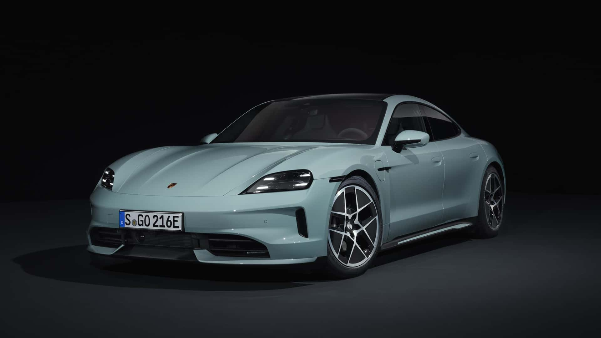

Porsche Taycan 2024
Marca: Porsche
Modelo: Taycan
Año: 2024
Precio diario: $3,000
Tipo: Sedán deportivo eléctrico
Transmisión: Automática
Combustible: Eléctrico
Pasajeros: 4
Descripción
El Porsche Taycan 2024 es un sedán deportivo completamente eléctrico que combina el rendimiento legendario de Porsche con tecnología de vanguardia. Con una aceleración impresionante y un diseño elegante, este vehículo ofrece una experiencia de conducción única y sostenible.
Características destacadas:
- Aceleración de 0-100 km/h en 3.2 segundos
- Autonomía de hasta 484 km
- Carga rápida de 800V
- Sistema de suspensión neumática adaptativa